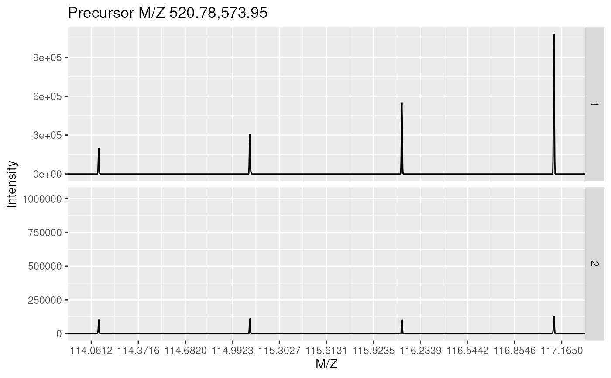
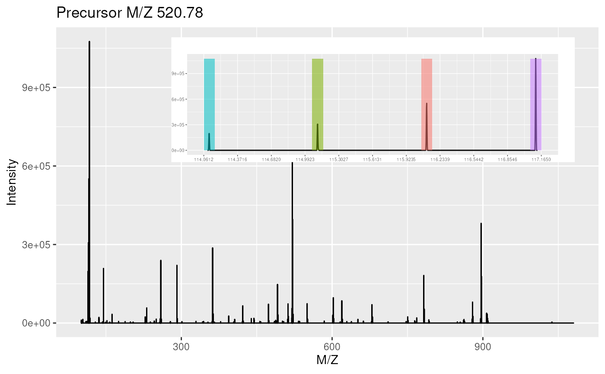
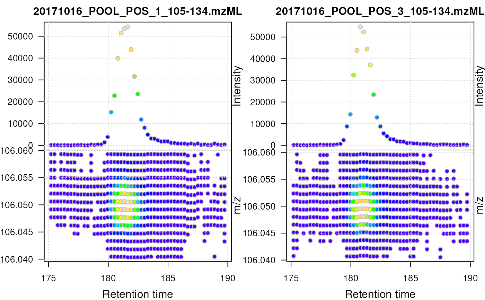
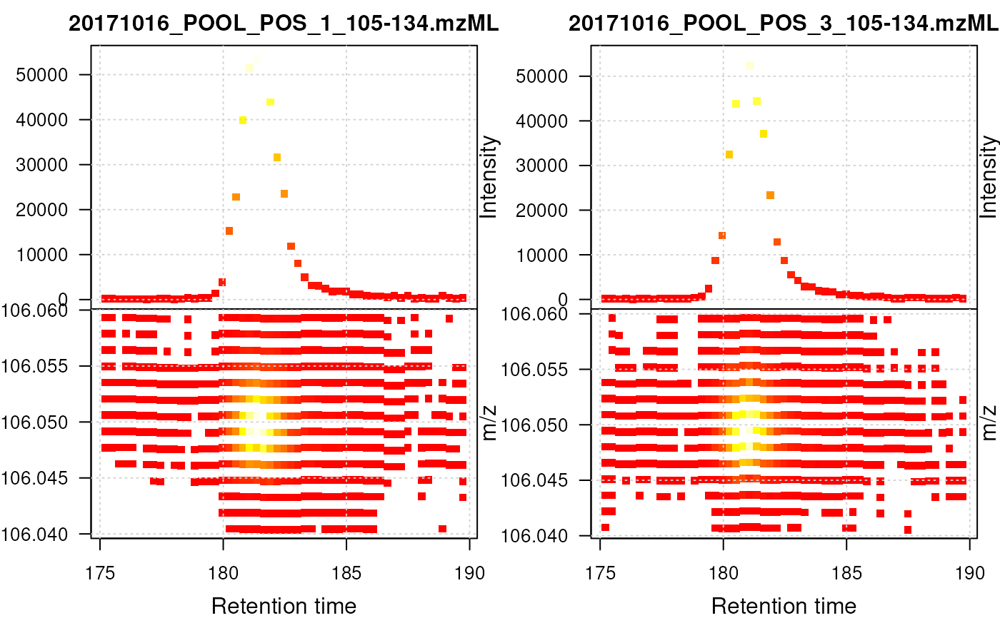
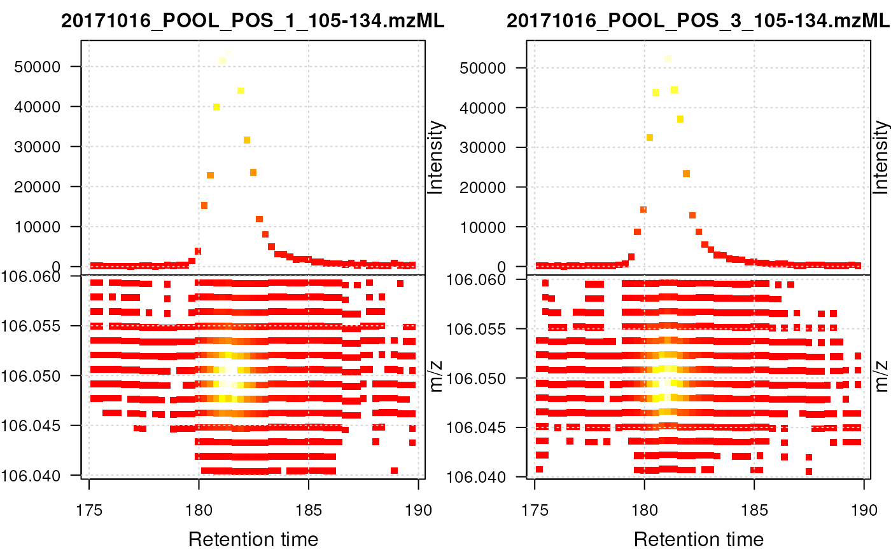

plot-methods.RdThese methods provide the functionality to plot mass spectrometry data
provided as MSnExp,
OnDiskMSnExp or Spectrum
objects. Most functions plot mass spectra M/Z values against
intensities.
Full spectra (using the full parameter) or specific peaks of
interest can be plotted using the reporters parameter. If
reporters are specified and full is set to 'TRUE', a
sub-figure of the reporter ions is inlaid inside the full spectrum.
If an "MSnExp" is provided as argument, all the
spectra are aligned vertically. Experiments can be subset to
extract spectra of interest using the [ operator or
extractPrecSpectra methods.
Most methods make use the ggplot2 system in which case an
object of class 'ggplot' is returned invisibly.
If a single "Spectrum2" and a "character"
representing a valid peptide sequence are passed as argument, the
expected fragement ions are calculated and matched/annotated on the
spectum plot.
Objects of class "Spectrum",
"Spectrum2" or "MSnExp" to
be plotted.
Missing, "Spectrum" or
"character".
An object of class
"ReporterIons" that defines the peaks to be
plotted. If not specified, full must be set to 'TRUE'.
Logical indicating whether full spectrum (respectively
spectra) of only reporter ions of interest should be
plotted. Default is 'FALSE', in which case reporters must be
defined.
Logical indicating if spectrum or spectra are in centroided mode, in which case peaks are plotted as histograms, rather than curves.
Logical specifying whether plot should be printed to current device. Default is 'TRUE'.
Width of sticks for full centroided spectra. Default is to use maximum MZ value divided by 500.
Width of histogram bars for centroided reporter ions plots. Default is 0.01.
See below for more details.
plot(signature(x = "MSnExp", y = "missing"),
type = c("spectra", "XIC"), reporters = "ReporterIons",
full = "logical", plot = "logical", ...)For type = "spectra": Plots all the spectra in the
MSnExp object vertically. One of reporters must be
defined or full set to 'TRUE'. In case of MSnExp
objects, repoter ions are not inlaid when full is 'TRUE'.
For type = "XIC": Plots a combined plot of retention time
against m/z values and retention time against largest signal per
spectrum for each file. Data points are colored by intensity. The
lower part of the plot represents the location of the individual
signals in the retention time - m/z space, the upper part the base
peak chromatogram of the data (i.e. the largest signal for each
spectrum). This plot type is restricted to MS level 1 data and is
most useful for LC-MS data.
Ideally, the MSnExp (or OnDiskMSnExp)
object should be filtered first using the filterRt
and filterMz functions to narrow on an ion of
interest. See examples below. This plot uses base R
plotting. Additional arguments to the plot function can be
passed with ....
Additional arguments for type = "XIC" are:
colcolor for the border of the points. Defaults to
col = "grey".
colrampcolor function/ramp to be used for the
intensity-dependent background color of data points. Defaults
to colramp = topo.colors.
grid.colorcolor for the grid lines. Defaults to
grid.color = "lightgrey"; use grid.color = NA to
disable grid lines altogether.
pchpoint character. Defaults to pch = 21
...additional parameters for the low-level
plot function.
plot(signature(x = "Spectrum", y = "missing"), reporters =
"ReporterIons", full = "logical", centroided. = "logical", plot =
"logical", w1, w2)Displays the MZs against intensities of
the Spectrum object as a line plot.
At least one of reporters being defined or full
set to 'TRUE' is required.
reporters and full are used only for
"Spectrum2"
objects. Full "Spectrum1" spectra are plotted
by default.
plot(signature(x = "Spectrum2", y = "character"), orientation
= "numeric", add = "logical", col = "character", pch, xlab =
"character", ylab = "character", xlim = "numeric", ylim =
"numeric", tolerance = "numeric", relative = "logical", type =
"character", modifications = "numeric", x = "numeric", fragments
= "data.frame", fragments.cex = "numeric", ... )Plots a single
MS2 spectrum and annotates the fragment ions based on the
matching between the peaks in x and the fragment peaks
calculated from the peptide sequence y. The default
values are orientation=1, add=FALSE,
col="#74ADD1", pch=NA, xlab="m/z",
ylab="intensity", ylim=c(0, 1),
tolerance=25e-6, relative=TRUE, type=c("b", "y"),
modifications=c(C=160.030649), z=1,
fragments=MSnbase:::calculateFragments_Spectrum2 and
fragments.cex=0.75. Additional arguments ... are
passed to plot.default.
calculateFragments to calculate ions produced by
fragmentation and plot.Spectrum.Spectrum to plot and
compare 2 spectra and their shared peaks.
Chromatogram for plotting of chromatographic data.
data(itraqdata)
## plotting experiments
plot(itraqdata[1:2], reporters = iTRAQ4)

plot(itraqdata[1:2], full = TRUE)
## plotting spectra
plot(itraqdata[[1]],reporters = iTRAQ4, full = TRUE)

itraqdata2 <- pickPeaks(itraqdata)
i <- 14
s <- as.character(fData(itraqdata2)[i, "PeptideSequence"])
plot(itraqdata2[[i]], s, main = s)

## Load profile-mode LC-MS files
library(msdata)
od <- readMSData(dir(system.file("sciex", package = "msdata"),
full.names = TRUE), mode = "onDisk")
## Restrict the MS data to signal for serine
serine <- filterMz(filterRt(od, rt = c(175, 190)), mz = c(106.04, 106.06))
plot(serine, type = "XIC")

## Same plot but using heat.colors, rectangles and no point border
plot(serine, type = "XIC", pch = 22, colramp = heat.colors, col = NA)
